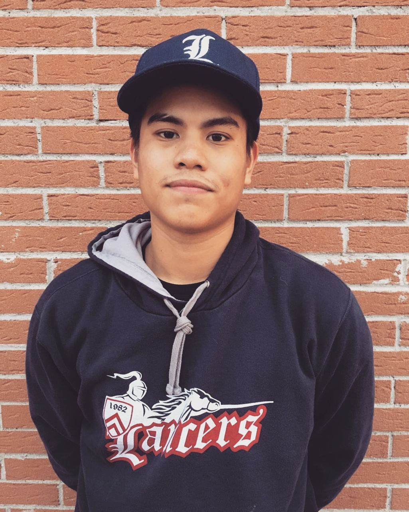

Il roster dei Lancers è oramai definito e con l’amichevole svolta a Firenze sabato scorso lo staff tecnico ha trovato spunti sui quali lavorare nelle sedute infrasettimanali.
La squadra si è dimostrata all’altezza, i nuovi arrivati si sono subito messi a disposizione del manager e dei compagni dimostrandosi dei giocatori con ottime capacità tecniche nonchè persone affidabili.
Abbiamo deciso di fare loro qualche domanda.
Benvenuto nei Lancers! Come ti trovi con i tuoi nuovi compagni?
BOSI: Ciao, mi trovo bene con i nuovi compagni che mi hanno accolto subito alla grande, come se avessi giocato sempre lì.
RUDAJ: Volevi dire come mi trovo con i miei nuovi fratelli? Non ci sono parole per descrivere questi ragazzi, ognuno di loro e’ speciale, grazie a loro (allenatori compresi) mi sento già parte della famiglia!
CASTILLO: Con i ragazzi mi trovo veramente bene, è una famiglia molto unita ed essendo il più giovane tra loro mi stanno aiutando molto a crescere come giocatore e persona.
Cosa pensi della nostra società e della sua organizzazione?
BOSI: Sulla società e organizzazione non credo di essere ancora in grado per poter giudicare ma da quello che ho visto, un ambiente tranquillo, familiare dove tutti partecipano attivamente.
RUDAJ: La società è ben organizzata per ogni minima cosa, si danno da fare tanto e tutti insieme. Come detto prima sono o meglio dire siamo una Famiglia.
CASTILLO: E’ presto per dirlo ma credo che la società sia ben organizzata, tutti remano dalla stessa parte.
Quali sono i tuoi obiettivi per questa stagione?
BOSI: Questa stagione spero di far bene per la squadra e di essere utile per riuscire a raggiungere i playoff.
RUDAJ: I miei obiettivi sono migliorare sempre di più, avere buoni risultati, divertirmi e soprattutto vincere le partite.
CASTILLO: Quest’anno per me èuna nuova esperienza, un livello di gioco più alto e questo mi stimola a dare il massimo per la squadra.

Grazie a Raffale, Arberim e Jamma per averci concesso un pò del loro tempo ed in bocca al lupo per la stagione!
Vi aspettiamo domani al Lancers Field per il doppio incontro di pre campionato con gli Yankees di San Giovanni in Persiceto, si inizia dalla ore 11.